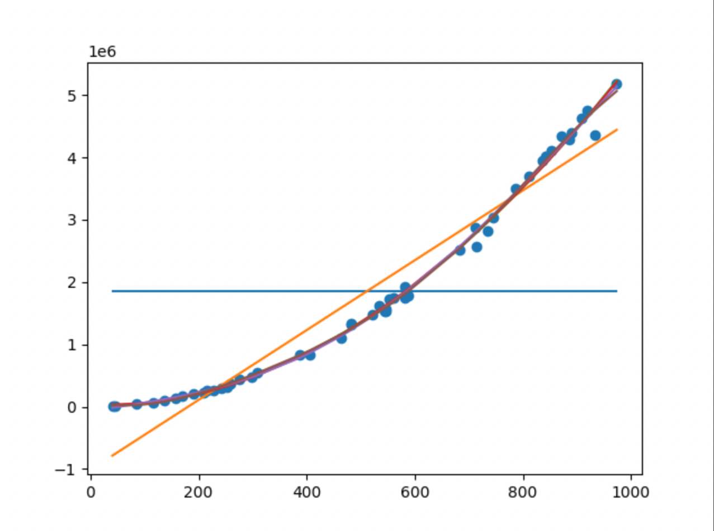

Quand on expérimente en sciences, on récupère des données et on souhaite voir si on peut en extraire une formule / équation / théorie.
Dans ce processus, on peut utiliser plusieurs moyens qui sont facilités par l'informatique.
On essaie de déterminer quelle quantité d'énergie correspond à la vitesse d'un objet avec une certaine masse.
On a effectué une série d'expériences dans une
Différentes étapesTODO
Tu dois charger le fichier CSV appelé energies.csv
Pour démontrer que ça fonctionne, fais en sorte que chaque ligne s'affiche dans la console de l'application.
colonne 1 : 744.0767546189211 colonne 2 : 3028797.7951537026 colonne 1 : 712.8799544954765 colonne 2 : 2868918.662697371 colonne 1 : 561.9147596101623 colonne 2 : 1751509.2705130153 colonne 1 : 214.30142994490154 colonne 2 : 267666.19081086485 colonne 1 : 257.7996020799187 colonne 2 : 375263.7294935496 colonne 1 : 785.673856989051 colonne 2 : 3496528.0862930445 colonne 1 : 587.0405541492664 colonne 2 : 1778133.2107211526 colonne 1 : 973.6550276975032 colonne 2 : 5178806.838988018
En utilisant un graphe matplotlib, affiche les données du fichier :
Tu dois trouver les approximations polynomiales du nuage de point pour les degrés allant de 0 à 5.
Tu dois démontrer que c'est fait en affichant les polynômes dans la console.
---------------------------------
approximation polynomial de degre 0
1.857e+06
---------------------------------
approximation polynomial de degre 1
5601 x - 1.012e+06
---------------------------------
approximation polynomial de degre 2
2
5.649 x - 144.1 x + 1.507e+04
---------------------------------
approximation polynomial de degre 3
3 2
-0.0003907 x + 6.243 x - 393.3 x + 3.947e+04
---------------------------------
approximation polynomial de degre 4
4 3 2
-6.049e-06 x + 0.01154 x - 1.437 x + 1393 x - 7.178e+04
---------------------------------
approximation polynomial de degre 5
5 4 3 2
-2.841e-08 x + 6.595e-05 x - 0.05402 x + 24.17 x - 2561 x + 9.616e+04
Tu dois superposer les polynomes et le nuage de point dans un second graphique matplotlib afin de visualiser à quel point chaque courbe correspond au nuage de points.
Dans un document Word que tu vas joindre à ton script Python dans ta remise, tu dois créer un premier chapitre de données avec des copies des graphiques produits par le script.
Dans un chapitre "analyse des résultats", tu dois décrire quelle est selon toi l'approximation polynomiale la plus appropriée.
Dans un chapitre "Formule", tu dois écrire la formule qui selon toi relie l'énergie mesurée à la vitesse dans ce phénomène,